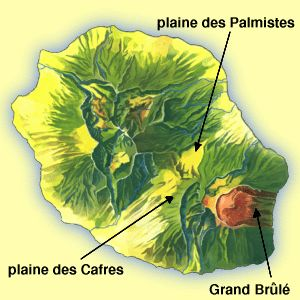

 La plaine des Cafres se situe entre l'imposante masse du Piton des Neiges (3069m) et le paysage lunaire du volcan. Elle s'étend du Tampon à Bourg-Murat. On la traverse pour aller au volcan par le pas de Belcombe.
Elle tient son nom de l'une des plus ancienne ethnie de l'île. Les cafres sont des africains importés comme esclaves, originaires de l'actuel Mozambique et de ses environs. Aujourd'hui, « Cafre » désigne l'ensemble de la population noire. La « fêt Caf' » est le jour anniversaire de l'abolition de l'esclavage.
C'est une région riche en cultures et en pâturages grâce bien sur à un sol très fertile et à un climat frais et humide. C'est une zone avec de nombreuses aires de pique niques ou les Réunionnais adorent passer leur dimanche après-midi. Ces aires sont bien aménagées comme partout et sont toujours entourés de détritus malgré les campagnes pour la propreté.